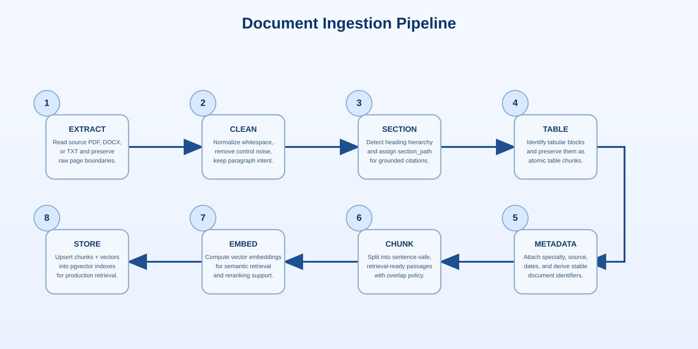

AI & RAG Pipeline
Section 4 of 12 · Back to Implementation
RAG Pipeline Overview
The high-level pipeline below shows the core stages from document ingestion to grounded generation. Queries are normalized, retrieved with vector and keyword search, fused, reranked, and finally assembled with citations before response generation. The stages are separated so each step is observable and tunable without changing the entire pipeline.
This structure improves evidence recall while maintaining precision, which is critical for clinical guidance. It also keeps model behavior auditable because each stage can log inputs and outputs for later review.
/v1/chat/completions interface via vLLM, making the routing layer model-agnostic.
Libraries Used (RAG Service)
| Library | Purpose |
|---|---|
sentence-transformers (all-MiniLM-L6-v2) | Embeds queries into 384-dimensional vectors |
pgvector | PostgreSQL extension for cosine similarity vector search |
cross-encoder/ms-marco-MiniLM-L-6-v2 | Cross-encoder model for reranking retrieved chunks |
httpx | Async HTTP client for streaming from Ollama |
pdfplumber | PDF text extraction for uploaded file context |
Overview of Generation Flow
When a GP submits a consultation, the backend schedules an async background task that calls the RAG service and streams the result back via SSE:
_async_generate_ai_response(chat_id, user_id, content).
stream_start is published.
/answer
Request is streamed to the RAG service (which runs the ingestion/retrieval pipeline as needed).
content event.
is_generating.
complete is published and the browser renders the final response.
Document Ingestion Pipeline
Before any retrieval can happen, clinical guidelines must be indexed. The ingestion pipeline in rag_service/src/ingestion/pipeline.py processes each PDF through 8 sequential stages. Every stage is wrapped in a try/except that raises PipelineError(stage, path, message), so failures are attributed to the exact stage that caused them. When write_debug_artifacts=True, each stage's output is serialised to data/debug/<doc_id>/<stage>.json for inspection.

Stage 1 — EXTRACT (ingestion/extract.py)
Reads raw text from the source file. Supports PDF (PyPDF2), DOCX (python-docx), and plain text. The output is a RawDocument dict containing a list of pages, each with raw text and page number.
Stage 2 — CLEAN (ingestion/clean.py)
Normalises the raw text: collapses excessive whitespace, strips running headers/footers, and removes control characters. Preserves paragraph breaks.
Stage 3 — SECTION (ingestion/section_detect.py)
Detects section boundaries by scanning for heading patterns (numbered headings, ALL-CAPS lines, markdown-style # headings). Each text block is tagged with a section_path (e.g. ["3", "3.2", "Management"]) used downstream for grouping and citations.
Stage 4 — TABLE (ingestion/table_detect.py)
Identifies tabular content and converts it to structured plain text. Table blocks are flagged content_type="table" so the chunker treats them as atomic — each table becomes exactly one chunk regardless of size.
Stage 5 — METADATA (ingestion/metadata.py)
Attaches document-level metadata from configs/sources.yaml: source name, specialty, doc type, author organisation, publish date, and source URL. Derives a stable doc_id from the source name and file path. This is when the doc_id is first known, so debug artifacts written before this stage use a temporary MD5-based directory name and are renamed in _backfill_debug_artifacts().
Stage 6 — CHUNK (ingestion/chunk.py)
Splits the document into embedding-ready chunks using sentence-aligned boundaries:
# ingestion/chunk.py
MIN_CHUNK_TOKENS = 300
MAX_CHUNK_TOKENS = 800
OVERLAP_TOKENS = 80
SHORT_SECTION_TOKENS = 150 # sections smaller than this are merged with the next
MAX_MERGE_SECTIONS = 2 # maximum number of sections to mergeThe chunk size configuration values reflect a deliberate trade-off between semantic completeness and embedding signal quality. Chunks below MIN_CHUNK_TOKENS=300 tend to be too short to carry complete clinical reasoning — a single sentence stating a drug dose without its surrounding indication and contraindication context is less useful for retrieval than a paragraph that includes all three. Chunks above MAX_CHUNK_TOKENS=800 dilute the semantic signal that embedding models capture: a dense 1,200-token passage covering multiple clinical topics produces an embedding vector that approximates the average of those topics, reducing its cosine similarity to any single specific query. The OVERLAP_TOKENS=80 setting prevents retrieval misses at chunk boundaries, where a clinically connected statement that spans the end of one chunk and the beginning of the next would be missed by any query that targets only the boundary-spanning content. The overlap duplicates the tail of each chunk into the opening of the next, so the boundary region appears in both and is retrievable from either direction.
Why sentence-aligned chunking? A naive token or character split can separate a recommendation from its qualifier. For example, splitting “Start aspirin 75 mg daily” from “unless the patient has a contraindication to NSAIDs” yields clinically unsafe fragments. Sentence-aligned chunking keeps each chunk independently meaningful.
Why NLTK instead of a period split? Clinical prose includes abbreviations such as Dr., e.g., Fig., and recommendation numbering forms that naive period splitting breaks incorrectly. NLTK Punkt tokenization handles these patterns more reliably.
The tokenizer resources (punkt and punkt_tab) are required at runtime; startup checks fail fast if either resource is missing, preventing silent malformed chunking.
Why overlap? Clinically relevant context often straddles chunk boundaries. Overlap duplicates tail context into the next chunk so retrieval can still return a complete interpretation even when a query targets boundary-spanning statements.
The process per section group:
- Table blocks → one chunk each (atomic, no splitting)
- Text blocks grouped by identical
section_path - Short sections (<150 tokens) merged with the next group (up to 2 merges)
- Remaining text split into sentence-aligned chunks using NLTK
sent_tokenize - 80-token overlap carried forward into the next chunk, including across section boundaries
- Oversized single sentences (>800 tokens) are emitted as their own chunk to avoid getting stuck
Cross-section overlap is intentional: the chunker carries trailing sentence blocks from one section group into the next so guidance near heading boundaries is not fragmented. This replaced earlier behavior that reset overlap at section boundaries.
Each chunk gets a stable chunk_id:
def generate_chunk_id(doc_id: str, doc_version: str, text: str) -> str:
hash_input = f"{doc_id}|{doc_version}|{text}"
return hashlib.sha256(hash_input.encode()).hexdigest()[:16]Stage 7 — EMBED (ingestion/embed.py)
Generates L2-normalised dense vectors for each chunk using a SentenceTransformer model. Chunks are processed in batches of 32 with retry logic:
EMBEDDING_BATCH_SIZE = 32
MAX_RETRIES = 3
RETRY_BACKOFF_BASE = 2.0 # seconds; wait = 2^attempt before each retryIf a batch fails after all retries, the embedder falls back to per-chunk embedding. Chunks that still fail are quarantined with embedding_status="failed" and excluded from storage — they do not block the rest of the document.
Stage 8 — STORE (ingestion/store.py)
Persists successful chunks to the pgvector database. Before inserting, all existing chunks for the `doc_id` are deleted to prevent orphaned rows from prior versions whose chunk IDs may differ. Each chunk is then upserted using a per-chunk savepoint for partial-failure safety:
# ingestion/store.py — upsert logic (simplified)
cur.execute("DELETE FROM rag_chunks WHERE doc_id = %s", (doc_id,))
for chunk in eligible: # only embedding_status="success" chunks
_begin_savepoint(conn, chunk_id)
action = _upsert_chunk(conn, chunk, doc_id, doc_version)
# "inserted" — new chunk
# "updated" — text or metadata changed
# "skipped" — identical to existing row
_release_savepoint(conn, chunk_id)The store returns a report {inserted, updated, skipped, failed} which propagates all the way up to the CLI and the Admin → RAG Status page.
Running ingestion
Documents can be ingested via the Admin Panel UI (/admin/guidelines) or via the CLI for bulk operations:
# Inside the rag_service container
python -m src.ingestion.cli ingest \
--input /data/guidelines \
--source-name "NICE Guidelines" \
--dry-run # parse, chunk, embed — but skip DB writes
--since 2026-01-01 # only process files modified after this date
--write-debug-artifacts # dump per-stage JSON to data/debug/The run_ingestion() function discovers PDFs (sorted oldest-first by mtime), runs run_pipeline() per file, and returns a summary report aggregating counts across all files.
The RAG Retrieval Pipeline (8 Stages)
The retrieve() function in rag_service/src/retrieval/retrieve.py runs a structured 8-stage pipeline. Each stage is timed, logged, and its output is optionally written to disk for debugging:

# rag_service/src/retrieval/retrieve.py
def retrieve(
query: str,
db_url: str,
top_k: int = 5,
specialty: str | None = None,
score_threshold: float = 0.3,
expand_query: bool = False,
) -> list[CitedResult]:
# Stage 1: Query processing — normalise and optionally expand query with synonyms
processed = process_query(query, expand=expand_query)
# Stage 2: Vector search — cosine similarity using pgvector
vector_results = vector_search(
query_embedding=processed.embedding,
db_url=db_url,
top_k=top_k * 4, # over-fetch so later stages have candidates to prune
specialty=specialty,
)
# Stage 3: Keyword search — BM25 via PostgreSQL tsvector (with graceful fallback)
try:
keyword_results = keyword_search(query=processed.expanded, db_url=db_url,
top_k=top_k * 4, specialty=specialty)
except Exception as e:
logger.warning(f"KEYWORD_SEARCH failed — falling back to vector only: {e}")
keyword_results = []
# Stage 4: Reciprocal Rank Fusion — merge the two ranked lists
fused = reciprocal_rank_fusion(vector_results=vector_results,
keyword_results=keyword_results)
# Stage 5: Filter — 3-tier fallback (see filter_chunks below)
filtered = filter_chunks(query=query, retrieved=fused)
if not filtered:
return [] # no evidence response
# Stage 6: Rerank — cross-encoder scores each (query, chunk) pair
reranked = rerank(query=query, results=filtered, top_k=top_k * 2)
# Stage 7: Deduplicate — remove near-identical chunks
deduped = deduplicate(reranked)
# Stage 8: Assemble citations — attach rich metadata to each result
return assemble_citations(deduped[:top_k])The retrieval function deliberately over-fetches early (top_k * 4) because later filtering, reranking, and deduplication remove candidates. Without over-fetching, late stages can collapse to too few results and hurt recall.
The keyword branch is wrapped with graceful fallback so vector retrieval remains available even if full-text search fails temporarily.
Why two search methods? Vector search captures semantic similarity (finds relevant content even when different words are used), while keyword search is better for exact clinical terms, drug names, and guideline codes. Combining them via RRF consistently outperforms either method alone.
Stage 5 detail — `filter_chunks` 3-tier fallback
filter_chunks in rag_service/src/api/services.py applies a staged fallback so that valid clinical queries are not silently dropped when strict lexical matching fails:
MIN_RELEVANCE = 0.25 # absolute floor — boilerplate and noise gate
HIGH_CONFIDENCE_RELEVANCE = 0.72 # tier 1 upper threshold
SOFT_FALLBACK_RELEVANCE = 0.55 # tier 2 threshold
LOW_SCORE_FALLBACK_FLOOR = 0.04 # tier 3 absolute minimum
LOW_SCORE_FALLBACK_RATIO = 0.85 # tier 3 = max(floor, top_score × ratio)These thresholds create a precision-to-recall ladder: strict lexical/score matching first, semantic fallback second, and controlled low-score recovery last. That ordering avoids premature low-quality evidence while still preventing empty responses for valid clinical queries.
All chunks first pass a base gate: score ≥ MIN_RELEVANCE, has a source identifier, and is not boilerplate (checked via is_boilerplate() against known header/footer patterns). Then:
| Tier | Condition | Purpose |
|---|---|---|
| 1 — strict | lexical overlap with query tokens OR score ≥ 0.72 | Standard path; has_query_overlap() requires ≥1 shared token of length ≥ 3 (3-char minimum allows clinical abbreviations like AF, BP, MI) |
| 2 — semantic | score ≥ 0.55 | Catches semantically relevant chunks when query uses synonyms or paraphrasing not present verbatim in the guideline |
| 3 — low-score | score ≥ max(0.04, top\_score × 0.85) | Last resort; returns the best available evidence rather than an empty response — still requires lexical overlap and non-boilerplate |
Each tier is only attempted if the previous one returned nothing. This change fixed queries that previously returned the "no guideline passage found" error despite relevant content existing in the index.
Hybrid Search: Vector + Keyword
Vector search uses pgvector's <=> cosine distance operator:
-- Finds chunks whose embeddings are closest to the query embedding
SELECT chunk_id, text, metadata,
1 - (embedding <=> $1) AS score -- cosine similarity (0 to 1)
FROM rag_chunks
WHERE 1 - (embedding <=> $1) > 0.0
ORDER BY embedding <=> $1 -- ascending distance = descending similarity
LIMIT $2;Keyword search uses PostgreSQL's built-in tsvector full-text search, enabled by the migration that adds a generated text_search_vector column:
-- Finds chunks matching the query's key terms
SELECT chunk_id, text, metadata,
ts_rank(text_search_vector, plainto_tsquery('english', $1)) AS rank
FROM rag_chunks
WHERE text_search_vector @@ plainto_tsquery('english', $1)
ORDER BY rank DESC
LIMIT $2;The text_search_vector column is a PostgreSQL generated column maintained automatically by the database engine:
ALTER TABLE rag_chunks
ADD COLUMN text_search_vector tsvector
GENERATED ALWAYS AS (to_tsvector('english', text)) STORED;OR-query fallback: When a long clinical query returns zero rows from the strict AND search (plainto_tsquery), the keyword search automatically falls back to an OR-style query built from the top-N non-stopword terms. This prevents retrieval starvation on multi-clause clinical questions where the AND conjunction finds nothing despite relevant chunks existing.
Reciprocal Rank Fusion
RRF combines two ranked lists by position rather than by normalised score — making it robust to the incompatible score scales of cosine similarity (0–1) and BM25 ts_rank:
# rag_service/src/retrieval/fusion.py
def reciprocal_rank_fusion(
vector_results: list[VectorSearchResult],
keyword_results: list[KeywordSearchResult],
k: int = 60, # constant that dampens advantage of top positions
top_k: int = 20,
) -> list[FusedResult]:
"""
For each chunk in either list: rrf_score += 1 / (k + rank)
Chunks appearing in both lists accumulate scores from both.
"""
rrf_scores: dict[str, float] = {}
chunk_data: dict[str, dict] = {}
for rank, vr in enumerate(vector_results, start=1):
rrf_scores[vr.chunk_id] = rrf_scores.get(vr.chunk_id, 0.0) + 1.0 / (k + rank)
chunk_data[vr.chunk_id] = {"doc_id": vr.doc_id, "text": vr.text,
"metadata": vr.metadata}
for rank, kr in enumerate(keyword_results, start=1):
rrf_scores[kr.chunk_id] = rrf_scores.get(kr.chunk_id, 0.0) + 1.0 / (k + rank)
if kr.chunk_id not in chunk_data:
chunk_data[kr.chunk_id] = {"doc_id": kr.doc_id, "text": kr.text,
"metadata": kr.metadata}
fused = [
FusedResult(chunk_id=cid, rrf_score=score,
vector_score=vector_scores.get(cid), **chunk_data[cid])
for cid, score in rrf_scores.items()
]
fused.sort(key=lambda r: r.rrf_score, reverse=True)
return fused[:top_k]RRF uses rank positions instead of raw score magnitudes, which is why it is stable when combining vector similarity and keyword ranking systems that operate on incompatible numeric scales.
A chunk that ranks 3rd in vector search and 5th in keyword search accumulates 1/(60+3) + 1/(60+5) = 0.0159 + 0.0154 = 0.0313, outranking a chunk that only appears in one list at rank 1 with 1/(60+1) = 0.0164.
RRF is used instead of a weighted average of raw scores specifically because vector cosine similarity and BM25 ts_rank operate on incompatible numeric scales. Cosine similarity is bounded between 0 and 1, while ts_rank is unbounded and depends on document length normalization, term frequency, and other factors that vary per query. Directly averaging these values would allow one scale to dominate the other depending on magnitude rather than actual relevance. RRF sidesteps this by discarding raw scores entirely and working only with rank positions — two lists of any score scale can be fused consistently because rank 1 always means "top result" regardless of whether the underlying score was 0.87 or 42.3. The damping constant k=60 prevents the top few positions from having disproportionate influence by spreading the score contribution across the full ranked list.
LLM Provider Routing
The routing system scores each request across four dimensions and selects either the local Ollama model or a cloud LLM:
# rag_service/src/generation/router.py
def select_generation_provider(
*,
query: str,
retrieved_chunks: list[dict],
severity: str | None = None,
is_revision: bool = False,
prompt_length_chars: int | None = None,
threshold: float | None = None,
) -> RouteDecision:
score = 0.0
reasons: list[str] = []
# Dimension 1: Query complexity (length + clinical terminology)
complexity_score, c_reasons = _score_complexity(query)
score += complexity_score; reasons.extend(c_reasons)
# Dimension 2: Prompt size (longer prompt benefits from larger context window)
prompt_score, p_reasons = _score_prompt_size(prompt_length_chars)
score += prompt_score; reasons.extend(p_reasons)
# Dimension 3: Clinical risk (urgent severity or risk-related terms)
risk_score, r_reasons = _score_risk(query, severity)
score += risk_score; reasons.extend(r_reasons)
# Dimension 4: Retrieval ambiguity (low scores = uncertain evidence = prefer cloud)
ambiguity_score, a_reasons = _score_ambiguity(retrieved_chunks)
score += ambiguity_score; reasons.extend(a_reasons)
resolved_threshold = threshold or routing_config.llm_route_threshold
score = min(score, 1.0)
provider = "cloud" if score >= resolved_threshold else "local"
# If cloud is unavailable (invalid API key/URL), always fall back to local
if provider == "cloud" and not _cloud_available():
reasons.append("cloud_unavailable")
provider = "local"
return RouteDecision(provider=provider, score=round(score, 3),
threshold=resolved_threshold, reasons=tuple(reasons))Scoring details:
- Long query (≥240 chars): +0.18; Medium (≥140 chars): +0.10
- Urgent severity: +0.30; Emergency: +0.40
- Low top retrieval score (<0.35): +0.22 (evidence is weak, cloud may do better)
- Long prompt (≥
long_prompt_charsconfig): +0.70
Setting LLM_ROUTE_THRESHOLD=1.1 in .env forces all requests to local Ollama since the score can never exceed 1.0.
The routing logic separates Med42 70B (cloud, RunPod, 2× A100 GPUs) from Med42 8B (local, Ollama) on the basis of query complexity, clinical risk, retrieval confidence, and prompt length. Med42 70B is used for complex or high-risk queries because larger parameter counts improve multi-step clinical reasoning and reduce the rate of clinically unsafe simplifications — a query about a patient with multiple comorbidities requiring differential diagnosis benefits from the larger model's capacity to hold more context and weigh competing factors. Med42 8B is used for simpler queries to reduce per-request latency and GPU cost: a straightforward hypertension management question with high retrieval confidence does not require the reasoning capacity of the 70B model, and running it locally avoids cloud API cost and round-trip latency. The cloud unavailability fallback ensures that if the RunPod endpoint is unreachable, all requests silently degrade to the local model rather than returning errors to GPs.
Prompt Construction & Injection Protection
All user-supplied text is sanitised before insertion into the prompt:
# rag_service/src/generation/prompts.py
_INJECTION_PATTERNS = [
re.compile(r"ignore\s+(all\s+)?previous\s+instructions", re.IGNORECASE),
re.compile(r"^system\s*:", re.IGNORECASE | re.MULTILINE),
re.compile(r"^assistant\s*:", re.IGNORECASE | re.MULTILINE),
re.compile(r"<\|?(system|im_start|im_end)\|?>", re.IGNORECASE),
re.compile(r"\[INST\]|\[/INST\]", re.IGNORECASE),
re.compile(r"you\s+are\s+now\s+(a|an|in)\b", re.IGNORECASE),
# ... more patterns
]
def _sanitize_input(text: str, *, max_length: int = 10_000) -> str:
# Strip ASCII control characters (except newline \n and tab \t)
cleaned = re.sub(r"[\x00-\x08\x0b\x0c\x0e-\x1f\x7f]", "", text)
# Remove prompt injection patterns
for pattern in _INJECTION_PATTERNS:
cleaned = pattern.sub("", cleaned)
# Collapse excessive whitespace left by removals
cleaned = re.sub(r"[ \t]{3,}", " ", cleaned)
return cleaned[:max_length].strip()The final prompt is assembled from sanitised sections using a single unified prompt template (previously two variants; collapsed after A/B testing showed the multi-mode approach caused false disclaimers and clinical errors):
def build_grounded_prompt(question, chunks, patient_context=None,
file_context=None, ...) -> str:
question = _sanitize_input(question)
context_block = _format_context(question, chunks) # numbered [1][2]... references
patient_block = _format_patient_context(patient_context)
parts = [_INSTRUCTIONS] # unified 12-rule instruction block
if patient_block:
parts.append(patient_block) # PATIENT CONTEXT section
parts.append("Context:\n" + (context_block or "(none)"))
if file_context:
parts.append(f"UPLOADED DOCUMENTS\n{_sanitize_input(file_context)}")
parts += [f"Question: {question}", "Answer (with citations):"]
return "\n\n".join(parts)The unified _INSTRUCTIONS block contains 12 rules. The most clinically significant are:
- Rule 4 — Do not echo guideline recommendation numbers (e.g. 1.1.2) — state clinical content instead.
- Rule 7 — Aim for 4–8 sentences; keep answers concise and practical.
- Rule 10 — If context is insufficient, say so briefly rather than guessing.
- Rule 11 (Emergency override) — If the query involves neutropenic sepsis, cauda equina syndrome, or acute cord compression, always begin with
"Immediate action:"and state same-day emergency admission or 999. These presentations must never be described as benign. - Rule 12 (TIA accuracy) — A TIA resolves completely by definition. The model is explicitly prohibited from writing that TIA symptoms "persist for at least 24 hours" or cause "persistent deficits" (which describes stroke).
For revisions, build_revision_prompt() extends the same _INSTRUCTIONS block with the original question, previous answer, and specialist feedback, plus three additional revision rules (address all feedback points, no fabrication, stay concise).
Conversation History in RAG Context
For follow-up messages in the same consultation, prior turns are included in the RAG request so the model can answer in context. The backend builds a compact conversation transcript from the message history before calling the RAG service:
# backend/src/services/rag_context.py
CHAT_HISTORY_TOKEN_BUDGET = 2_000 # ~8 000 chars at 4 chars/token estimate
CHAT_HISTORY_MESSAGE_LIMIT = 20 # cap at last 20 messages
def build_conversation_history_from_messages(messages, *, limit, token_budget) -> str | None:
char_budget = token_budget * 4
history_lines = []
total_chars = 0
# Walk backwards to keep the most recent messages within budget
for message in reversed(messages[-limit:]):
if not message.content or message.is_error:
continue
if message.sender not in ("user", "specialist"):
continue # exclude AI turns to avoid self-anchoring
speaker = {"user": "GP", "specialist": "Specialist"}.get(
message.sender, message.sender.title()
)
line = f"{speaker}: {message.content.strip()}"
if total_chars + len(line) + 1 > char_budget and history_lines:
break
history_lines.append(line)
total_chars += len(line) + 1
history_lines.reverse() # restore chronological order
return "\n".join(history_lines) if history_lines else NoneImportant: AI-authored messages are intentionally excluded from conversation-history context in the production design. The goal is to reduce self-anchoring where the model repeats its earlier output instead of re-grounding on current retrieved evidence.
The transcript is injected into patient_context["conversation_history"] and forwarded to the RAG service, where the prompt builder includes it as context before the current question. is_error messages are excluded so failed generation attempts do not appear in context.
Token budgeting uses an explicit token budget converted via a character estimate (4 chars/token) to avoid tokenizer overhead on every request while still keeping prompt size within safe limits.
Generation Retry Worker (RQ)
Failed RAG generation jobs are not silently dropped. The system uses RQ (Redis Queue) with a dedicated rag_worker Docker container to retry transiently failed jobs:
# rag_service/src/jobs/retry.py
from rq import Queue, Retry
from redis import Redis
ingest_queue = Queue("ingest", connection=Redis.from_url(REDIS_URL))
def enqueue_generation(chat_id: str, idempotency_key: str):
ingest_queue.enqueue(
run_generation_job,
chat_id,
idempotency_key=idempotency_key,
retry=Retry(max=3, interval=[10, 30, 60]), # 10s, 30s, 60s back-off
)The backend sets the chat's generation_id (a UUID per SSE stream) as the idempotency key, so if the SSE connection drops and the client retries, the second call returns the cached result rather than triggering a second LLM call. Failed jobs after max retries are moved to RQ's failed queue and surfaced in the Admin → RAG Status page. Telemetry for each attempt is appended to /logs/retry_metrics.jsonl.
Inter-Service Authentication (Internal API Key)
The RAG service should not be publicly reachable. In addition to Docker network isolation, all RAG endpoints are protected by an internal API key passed via X-Internal-API-Key header:
# rag_service/src/core/security.py
INTERNAL_API_KEY = os.environ.get("RAG_INTERNAL_API_KEY", "")
async def verify_internal_api_key(
x_internal_api_key: str = Header(alias="X-Internal-API-Key"),
):
if not INTERNAL_API_KEY or x_internal_api_key != INTERNAL_API_KEY:
raise HTTPException(status_code=403, detail="Forbidden")The backend sets the same key as RAG_INTERNAL_API_KEY and injects it into every httpx request to the RAG service. The /health endpoint is excluded so uptime monitoring works without credentials.
Query Expansion with Medical Term Mapping
Before the query reaches the retrieval engine, the backend expands abbreviations and synonyms to improve recall:
# backend/src/services/rag_context.py
MEDICAL_TERM_EXPANSION = {
"hba1c": "glycated haemoglobin HbA1c",
"bp": "blood pressure hypertension",
"mi": "myocardial infarction heart attack",
"af": "atrial fibrillation",
"uti": "urinary tract infection",
# ... ~50 entries
}
def expand_query(query: str) -> str:
lower = query.lower()
expansions = [exp for abbrev, exp in MEDICAL_TERM_EXPANSION.items()
if re.search(r'\b' + re.escape(abbrev) + r'\b', lower)]
return query + " " + " ".join(expansions) if expansions else queryThe expanded query is used only for vector similarity search. The original query is preserved for the LLM prompt so the model sees exactly what the GP wrote.
Specialty-Scoped Retrieval (FilterConfig)
The RAG /ask endpoint accepts an optional FilterConfig to restrict retrieval to specific sources or documents — enabling future specialty-scoped retrieval (e.g. cardiology guidelines only) without changing the embedding model:
# rag_service/src/models/schemas.py
class FilterConfig(BaseModel):
source_names: list[str] | None = None # restrict to named sources
doc_ids: list[str] | None = None # restrict to specific documents
min_score: float | None = None # override minimum similarity thresholdIf omitted, all indexed documents are searched.
Canonical Query Rewriting
Before vector search runs, the query is checked against a set of known clinical patterns. If matched, it is replaced with a precisely worded canonical retrieval query designed to hit the exact guideline passages that answer the GP's question. This addresses the gap between how GPs phrase questions and how guideline text is indexed.
# rag_service/src/api/canonicalization.py
def build_canonical_retrieval_query(
*, query: str, specialty: str | None, allowed_specialties: set[str]
) -> str | None:
"""Return a canonical query if a specialty rule fires; None otherwise."""
...Four canonical patterns are currently implemented:
| Trigger | Canonical query replaces GP phrasing with |
|---|---|
| Rheumatology — multi-joint persistent synovitis with referral intent | "Adult with suspected persistent synovitis… investigations before urgent rheumatology referral…" |
| Rheumatology — SLE with renal involvement | "Adult with known SLE and new proteinuria… lupus nephritis investigations and specialist referral…" |
| Neurology — gait apraxia + urinary + cognitive decline (NPH) | "Adult with gait apraxia, urinary symptoms, cognitive decline, ventriculomegaly…" |
| Neurology — sudden vertigo + focal deficit | "Adult with sudden-onset dizziness and focal neurological deficit… stroke pathways." |
Each pattern uses a set of regex hints (swelling, multi-joint, chronicity, investigations, referral intent, etc.) with all hints required to fire — keeping false-positive rate near zero. If the canonical query fires, it is used for retrieval only; the original GP question is still sent to the LLM.
rag_chunks Table Structure & Indexes
rag_chunks is the central storage layer for retrieval. Each row represents one guideline chunk with document identity, version, chunk hash, vector embedding, raw chunk text, and citation metadata.
The composite uniqueness constraint UNIQUE (doc_id, doc_version, chunk_id) is foundational. It guarantees that a chunk can appear at most once per document version and makes delete-before-upsert ingestion safe under retries.
The chunk_id is content-derived (document ID + version + text hash), so re-ingesting unchanged material preserves stable identities across runs.
Retrieval performance is driven by layered indexes: HNSW for vector similarity, B-tree for structured filters, and GIN for JSONB and full-text legs of hybrid search.
| Index type | Target | Purpose |
|---|---|---|
| HNSW (pgvector) | embedding | Fast approximate cosine-nearest-neighbor retrieval at scale. |
| B-tree | doc_id, doc_version, content_type | Efficient filtering before ranking. |
| GIN | metadata (JSONB) | Fast specialty/source lookups on nested metadata keys. |
| GIN | text_search_vector | Powers BM25 keyword leg of hybrid retrieval. |
HNSW avoids full-table vector scans by building a multi-layer navigable neighbor graph. Query traversal starts coarse at upper layers and descends to finer layers, delivering near-neighbor recall at sub-linear cost compared with exact O(n) scans.
Two key HNSW build parameters tune recall/speed tradeoffs: m=16 controls graph connectivity and ef_construction=64 controls candidate breadth during index construction.
The full-text path uses a generated PostgreSQL column (text_search_vector) with a GIN index, so lexical search maintenance is database-managed rather than application-managed.
RAG Service Logging & Telemetry
The service has two observability channels with different roles.
Structured logging: all modules emit JSON logs through a shared logger factory. Logs include timestamp, level, logger name, source file/line, and message fields. Console output follows environment log level, while file output can remain at full debug verbosity for post-incident analysis.
Route telemetry: an append-only JSONL file records every provider-routing decision with endpoint, selected provider, score, threshold, and reason list.
For privacy, telemetry stores a SHA-256 fingerprint of the query, not raw clinical text. This supports offline routing audits without duplicating patient-sensitive prompt content.
Ingestion additionally supports per-stage debug artifacts under data/debug/<doc_id>/<stage>.json, allowing deterministic inspection of stage outputs without rerunning full ingestion.